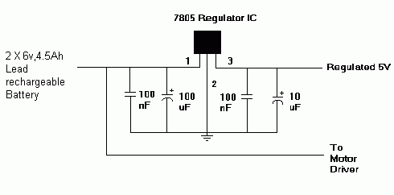
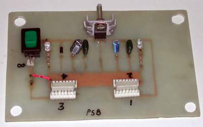

The entire robot needs two power supplies:
1) 12V at minimum 3.5 A for the locomotors
2) 5V at minimum 1.5 A for logic circuits and the cam-motor.
The main source of power for the robot is two 6V, 4.5A lead
rechargeable batteries connected in series to obtain 12V at 4.5A.
This 12V supply is given to a 7805 voltage regulator IC which provides
+5V and can give a maximum current of 1.5A.
This regulator can provide local on-card regulation, eliminating the
distribution problems associated with single point regulation.
It employs internal current limiting, thermal shut-down and safe area
protection, making it essentially indestructible. If adequate heat
sinking is provided, they can deliver over 1A output current. Although
designed primarily as fixed voltage regulators, these devices can be
used with external components to obtain adjustable voltages and
currents.
The 12V needed to power the motors is directly fed from the battery to the L298N motor drivers. The schematic of the power supply is given below. The capacitors in the input and output side are used to filter noise from the supply.

